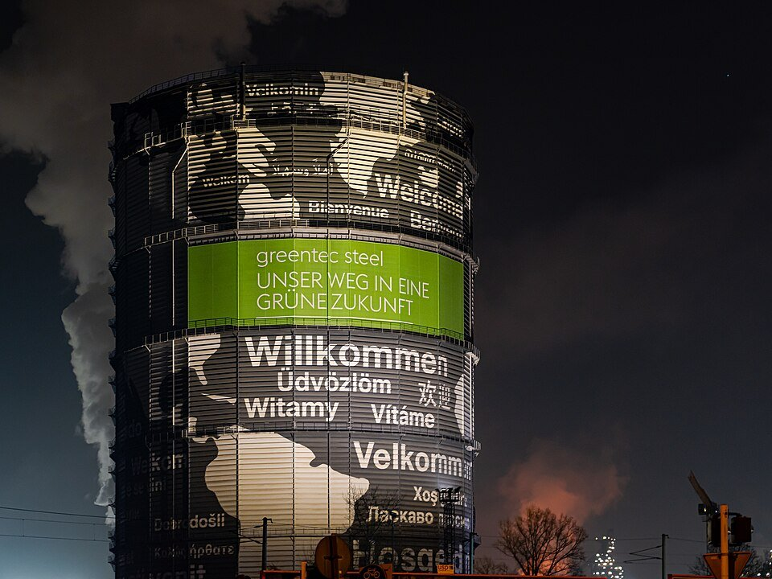
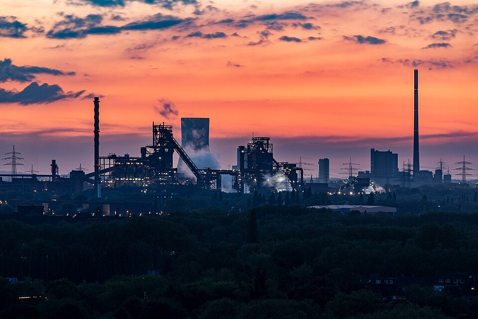

DECARBONIZATION · EUROPE · 2026.10
歐洲綠鋼進度：氫氣退潮、電爐接棒
鋼鐵潮流工作室 · 發布 2026.10.04

本期重點
截至 2026 年 10 月初，歐洲綠鋼的主軸已從「氫氣直接還原鐵」轉成「電弧爐為主、天然氣過渡」。電弧爐專案大多照進度推進，2027 年起陸續投產；氫氣專案則因綠氫太貴，普遍延後或改成先用天然氣。
- 氫氣路線退潮。 Stegra 完工成本超支、再度缺錢；thyssenkrupp 杜伊斯堡 DRI 廠確定初期不用氫；Salzgitter SALCOS 後續階段延後約 3 年。
- 電弧爐成為主流。 voestalpine、SSAB、Tata Steel 的電弧爐都在 2027 年投產，ArcelorMittal 敦克爾克則在 2029 年。
- 政府補助是關鍵。 推進中的專案多由政府補助五成上下，沒有補助的專案多半停擺。
- 高爐產能退場。 ArcelorMittal 預計 2027 年結束杜伊斯堡初級煉鋼，歐洲低碳鋼供給短期仍偏緊。
各大鋼廠專案現況
| 鋼廠 | 專案 | 最新進展 | 預計時程 |
|---|---|---|---|
| Stegra（瑞典） | Boden 氫氣綠鋼新廠；電解槽 700 MW，2030 年目標年產 500 萬噸 | 4 月才募得 14 億歐元；9/30 宣布完工成本「明顯高於」6 月估計，據報還缺約 8.8 億歐元，並由前 Saab 執行長 Håkan Buskhe 接任執行長 | 原訂 2026 年首批出鋼，時程重新檢討中 |
| thyssenkrupp（德國） | 杜伊斯堡直接還原鐵（DRI）廠，年產約 250 萬噸 DRI；總成本約 30 億歐元，三分之二由聯邦與北威州補助 | 綠氫招標因價格太高暫停；8 月確認初期可不用氫氣運轉，歐盟同意修改補助條件；9/24 Jacobs 擴大承接建廠管理 | 開爐日期未公布 |
| voestalpine（奧地利） | 林茲電弧爐，年產約 160 萬噸 | 9/22 到貨 790 噸核心設備 | 2027 年上半年首次出鋼；2029 年減碳 30% |
| Tata Steel UK | Port Talbot 電弧爐，年產約 300 萬噸；12.5 億英鎊（政府補助 5 億） | 打樁完成，進入第二階段基礎工程 | 2027 年底投產，減碳約 90% |
| SSAB（瑞典） | Oxelösund 電弧爐 | 5 月因輸電線物種保護訴訟停工，6 月訴訟撤回後復工 | 2027 年第二季投產 |
| ArcelorMittal（法國） | 敦克爾克電弧爐，年產 200 萬噸；13 億歐元，法國補助約一半 | 2/11 確認興建；德國不來梅、艾森許滕施塔特的 DRI 加電弧爐計畫已取消 | 2029 年 |
| Salzgitter（德國） | SALCOS 第一階段：100 MW 電解槽、DRI 廠、電弧爐；總投資 25 億歐元 | 2025 年 10 月宣布後續階段延後，因氫氣市場發展太慢（2026 年最新進度未查得） | 延至 2028–2029 年 |
氫氣路線：成本卡關
三大氫氣專案都卡在綠氫成本，業者改走「先天然氣、後氫氣」或延後投資。

- Stegra：從明星專案到資金缺口。 全球最大的綠氫煉鋼新廠，4 月募資後恢復施工，但 9 月底承認成本再超支、需要更多資本，並更換執行長。
- thyssenkrupp：先不用氫。 綠氫報價過高，招標暫停；德國政府與歐盟同意即使初期不用氫也照常補助，等於把「綠」的時程往後推。
- Salzgitter：分段延後。 第一階段持續施工，後續擴建延到 2028–2029 年，理由同樣是氫氣市場發展太慢。
- 業者坦言短期難量產。 thyssenkrupp 與 Salzgitter 都表示，德國短期內難以量產「綠鋼」。
電弧爐路線：2027 年起陸續投產
電弧爐以廢鋼為主要原料，技術成熟、投資較小，成為歐洲鋼廠最快能落地的減碳方案。
- voestalpine。 林茲電弧爐核心設備 9 月到貨，2027 年上半年首次出鋼；另一座在 Donawitz 的電弧爐同步施工中。
- Tata Steel UK。 Port Talbot 2024 年關閉高爐後改建電弧爐，2027 年底投產，可保住約 5,000 個英國工作。
- SSAB。 Oxelösund 電弧爐一度因輸電線環評訴訟停工，6 月復工，維持 2027 年第二季投產。
- ArcelorMittal。 放棄德國的 DRI 計畫，改在法國敦克爾克蓋電弧爐，2029 年投產，噸鋼排放約 0.6 噸，約為高爐的三分之一。
對台灣鋼鐵業的觀察
- 歐洲低碳鋼短期仍缺。 新電弧爐多在 2027–2029 年才投產，高爐卻已開始退場，2027 年前後低碳鋼的供需與溢價值得留意。
- CBAM 時程。 歐盟碳邊境調整機制已上路，2027 年起須實際購買憑證；台灣鋼廠及早建立產品碳足跡與減碳實績，對輸歐訂單較有利。
- 氫氣煉鋼的參考。 歐洲經驗顯示，綠氫成本是氫氣直接還原能否商轉的關鍵；以天然氣過渡、保留轉換為氫氣的能力，是目前較務實的做法。
資料來源
- Stegra says extra capital needed, appoints new CEO（Tech.eu，2026-09-30）
- Stegra to boost Boden construction after new funding（EUROMETAL，2026-04-16）
- Thyssenkrupp's Duisburg DRI plant could initially operate without hydrogen（EUROMETAL，2026-08-17）
- Jacobs extends management role for thyssenkrupp Duisburg DRI plant（SMM，2026-09-24）
- voestalpine receives EAF components（SMM，2026-09-22）
- Tata Steel steps up construction of £1.25bn Port Talbot electric furnace（PM Today，2026-09-25）
- Commissioning of the electric arc furnace in Oxelösund delayed（SSAB，2026-05-11）
- SSAB's Oxelösund EAF project back on track（SteelOrbis，2026-06-03）
- ArcelorMittal confirms EUR 1.3 billion EAF investment in Dunkirk（EUROMETAL，2026-02-11）
- Major pause in EU steel industry decarbonization projects（GMK Center，2025-10-08）
- 杜伊斯堡高爐關閉、thyssenkrupp 與 Salzgitter 綠鋼表態：鋼鐵潮流每日速報 9/20
內容僅供產業資訊參考，不構成投資建議。新聞版權屬原出處所有。